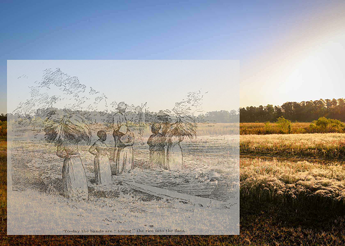
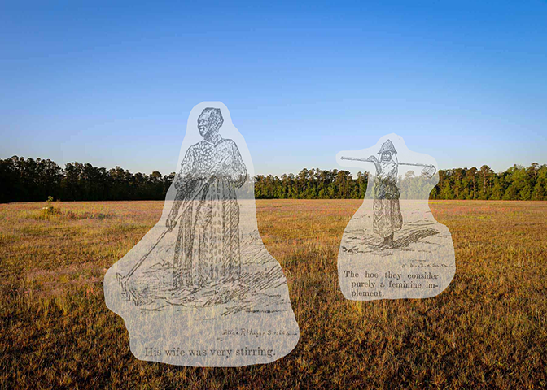
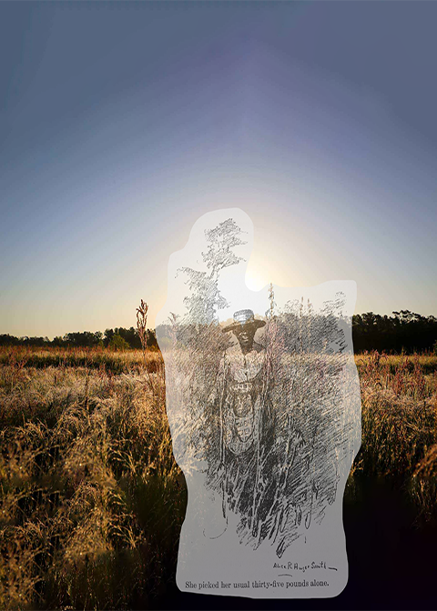
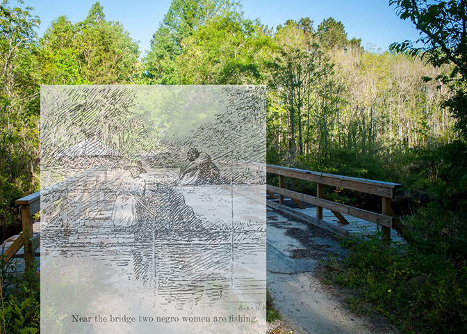
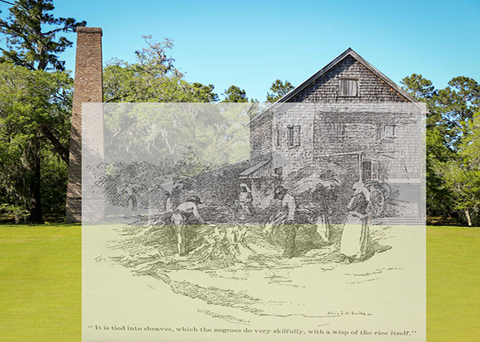

On this page is a collection of collaged and matched images of the illustrations of the rice field laborers overlaid on images recently taken of the plantation property. These images work to give agency in visibility to these women in their day-to-day tasks, not reading them as mere pieces of the landscape but acknowledging their presence in place and the work put forth by their persons.

Chicora Wood, owned by the Allston family, was one of the largest producers of rice in the South. In the 1800’s there were recorded to be 600+ enslaved people on the plantation grounds. Being that this was a rice plantation, the majority of the enslaved population were women due to this identifiably gendered practice of rice harvesting. The laborers on the Allston plantation were recorded to have produced 840,000 pounds of rice between 1850 and 1860. The Allston’s were well invested in the production of rice, and therefore invested in making the most profit from this female body.
Hannah Arendt, identifies a particular idea of laboring by nature, in reference to the ways that Bees work. They produce honey to survive, but in that survival, there is labor. In the same way, It might be understoond that despite the recognition of the woman rice worker as an objecive character, part of the biological composition of these bodies is that they posess the ability to reproduce. It is not by nature that this reproduction process is part of labor, but the commonization and extraction of value from life practice for those that do not possess ownership of themselves, renders their intimacy to become means of profit. There is now the presence of a layered identity projected onto and through these women; subject, worker, laborer, and self.

As the institution of American Slavery prospered, it was productive to have able bodies for childbearing in order to reproduce laborers. In this way, it might be understood that the women on this plantation, and many others like it are double laborers.
“Those who would capture African women to exploit their labors in the Americas would have to grapple with, and harness those women’s dual identity as workers and parents; once having done so they would inaugurate a language of race and racial hierarchy in which hat dualism was reduced to denigration and demobilized as evidence of European distinction”. (Morgan, 25)


The rice harvest was once a cultural piece of pride back in the homelands of these women. Rice is not native to the Americas, and all of the American practices in rice cultivation are directly by result of teaching and practice by these Black women. These women from Niger, Senegal, Ghana, Cote d’Ivorie, Mali Sierra Leone, and the Congo introduced an understanding and a skill far beyond what was capable of anyone else at the time.
